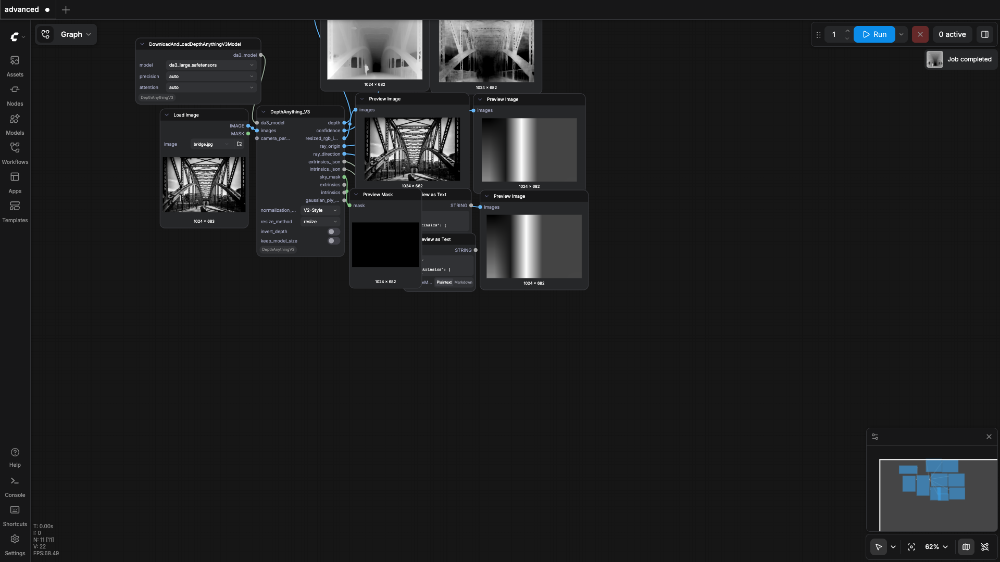
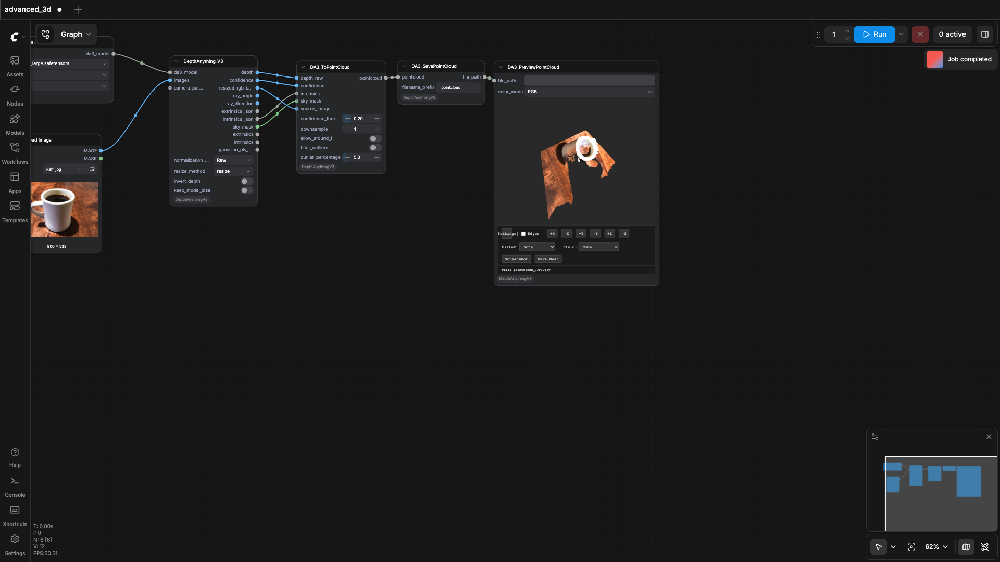
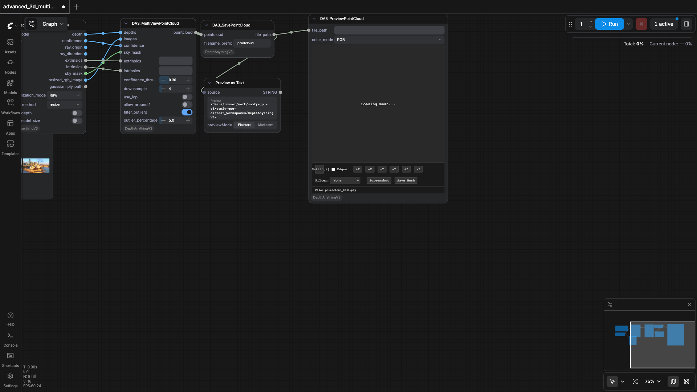
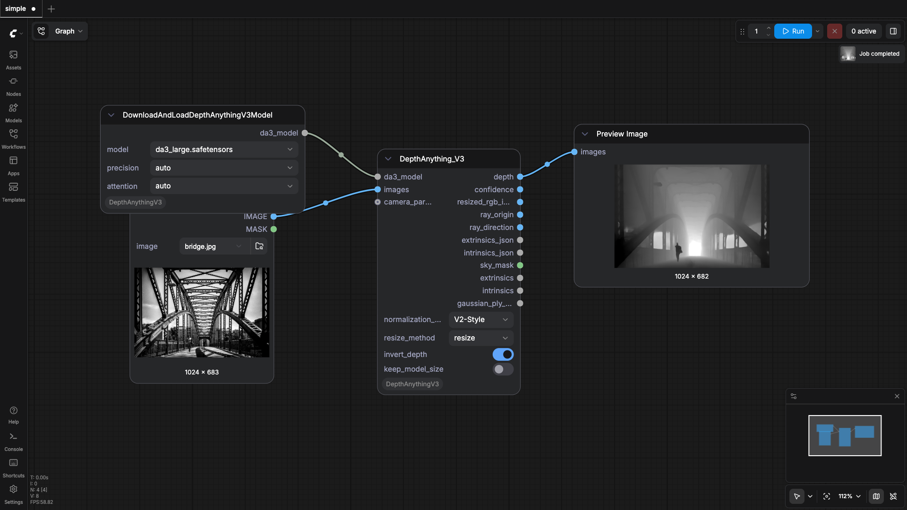

PozzettiAndrea/ComfyUI-DepthAnythingV3
Test Results
2026-05-11 10:17 UTC
macOS-15.7.4-arm64-arm-64bit
arm
100.0%
4 passed
4/4 tests
Workflows
Grid
List

advanced
pass
100.96s

advanced_3d
pass
31.04s

advanced_3d_multiview
pass
56.71s

simple
pass
41.02s
Downloaded Models
4 files · 1.5 GB
models/depthanything3/
1.5 GB
da3_large.safetensors
1.5 GB
.cache/huggingface/CACHEDIR.TAG
191.0 B
.cache/huggingface/download/model.safetensors.metadata
124.0 B
.cache/huggingface/.gitignore
1.0 B
×
‹
›
0.0s / 0.0s
Resource Usage
RAM (GB)
VRAM (GB)